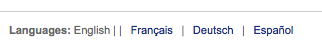

I18N/L10N
这些参数控制系统的国际化和本地化设置。
在这里： 更多 > 管理 > 全局系统参数 > I18N/L10N
AddressFormat
默认：美国格式 ([街道], [地址] - [城市], [邮编], [国家])
问：邮寄地址使用 ___
值：
德国格式 ([地址] [街道] - [邮编] [城市] - [国家])
法国格式 ([街道] [地址] - [邮编] [城市] - [国家])
美国格式 ([街道], [地址] - [城市], [邮编], [国家])
简介：
该参数使您能够在 Koha 中有关读者相关记录中正确显示地址。
alphabet
默认：A B C D E F G H I J K L M N O P Q R S T U V W X Y Z
问：使用字母 ___ 顺序来排列字母。这里用空格来隔开大写字母。
简介：
该参数允许您在 Koha 中定制自己的字母浏览顺序。

CalendarFirstDayOfWeek
默认：星期日
问：在日历中用 ___ 作为一周的第一天。
值：
星期日
星期一
星期二
星期三
星期四
星期五
星期六
简介：
使用此参数，您可以控制在Koha的日历弹出窗口和日历工具上显示的日期哪天作为一周的第一天。如果您修改了此参数，但在浏览器中没有看到变化，请尝试清除缓存，因为它会对这些页面上的 Javascript 进行修改。
dateformat
默认：mm/dd/yyyy
问：日期格式如 ___
值：
dd.mm.yyyy
dd/mm/yyyy
mm/dd/yyyy
yyyy/mm/dd
简介：
此参数控制日期显示格式。选项有美国格式——mm/dd/yyyy（04/24/2010），公制格式——dd/mm/yyyy (24/04/2010) 或者 ISO 格式——也就是国家标准化组织的格式, yyyy/mm/dd (2010/04/24)。ISO 格式主要用于处于不同地区和国家的图书馆为了使用一种统一的格式时使用。或者就是那些不使用标准格式或者美国格式的国家地区使用。更多关于 ISO 日期格式的信息参阅 http://www.iso.org/iso/iso_catalogue.htm。
language
默认：英文
问：在馆员端启用下列语言
值：
英文
OPACLanguages
问：在 OPAC 启用下列语言
默认：英文
值：
英文
注解
安装其他语言需要运行 misc/translator/translate 安装。例如，安装法文需要运行下面命令
./misc/translator/translate install fr-FR
来创建模板。一旦模板生成，而且所处位置正确，他们就会成为该参数的选项出现在正确的位置。
opaclanguagesdisplay
默认：不允许
问：___ 读者可以修改 OPAC 的语言。
值：
允许
读者可以在公共目录的顶部列表中选择修改界面语言

不允许
公共目录不显示选择语言的选项
简介：
使用 OpacLangSelectorMode 参数您可以控制是否在公共目录中显示允许读者选择语言的列表。
TimeFormat
默认：24 小时制
问：时间格式为 ___
值：
12 小时制（例如 02:12PM）
23 小时制（例如 14:18）
TranslateNotices
默认：不允许
问： ___ 翻译通知。如果设置，通知就会在“通知和单据“界面翻译。发给读者的通知也需要使用创建读者时预置的语言发送。
值：
不允许
允许
简介：
如果设置“允许”，在馆员端创建新读者时就需要选择“通知预置语言”，或者读者在登录后需要自行在信息选项中进行相关设定。